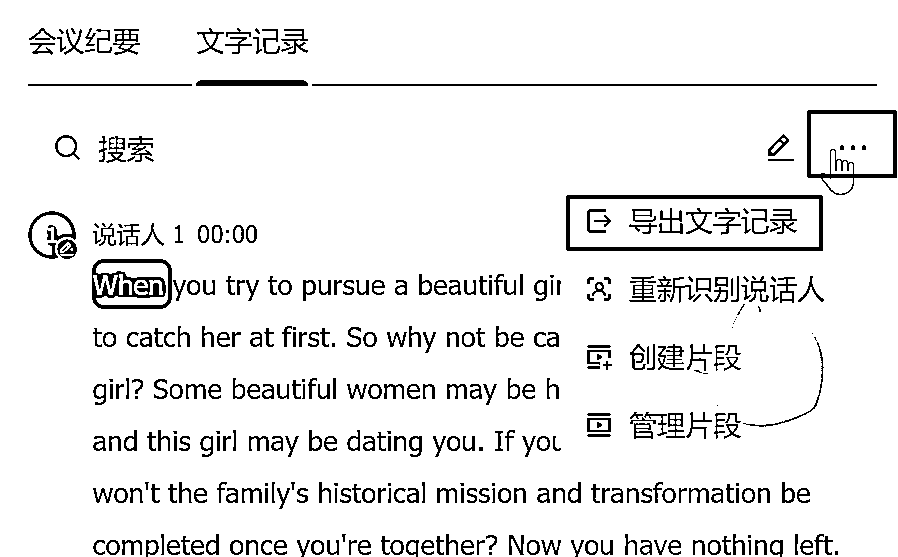

来源：https://pzt1wh07h5.feishu.cn/docx/BqjudGNyKo6Mi8xOVdccI5Arn3b
友友们好，我是🍑（昵称：云桃桃），通过看咱们社群的数字人精华干货分享，加上我自己的一点摸索，最终0基础的我，做视频号8天，发布视频9个，实现了单篇23w+阅读，一周涨粉1500+的成绩。
11月26日开始发表。
999+以后，会显示...。
数字人项目，是什么？它就是用外国美女来说赚钱，情感，健康，育儿等赛道的简短道理。如下图。
为什么值得做？AI热点，外国美女说中国道理，且内容有价值，情绪共鸣的成分存在，具备分享，表达自我的属性，这些优势叠加，使其能迅速聚集流量，产生传播与商业价值，这是它流量成功的关键。
那接下来，我来详细说一下视频的制作过程。
视频整体制作过程：找优质对标-根据对标找优质选题- 处理源中/英文案 - 改中/英文案 - 做数字人 - 导入剪映做剪辑 - 发布（一鱼多吃）
什么是对标账号？指的是挑选出来，作为标准和比较对象的优秀博主账号。相当于，在观摩优秀同学的做法。通过对标学习和反推分析,可以让我们快速补齐短板，在内容、运营、流量和变现多个维度取得提升。这就是对标账号的作用和意义。
在哪里找？虽然我是在视频号火的，但其实，我都是在抖音找的对标/选题，其实，很多选题，本来就是多平台通用的。
在抖音搜索“认知”，“认知思维”，选择用户，会出现很多数字人账号，点进去看一下，如果都是数字人的，就可先看一下。
在观察的过程中，这时候，你也可以确定你大概想做的具体赛道，是什么。比如：赚钱，人生认知，育儿，情感，国际新闻等。我选择的是，情感类的。
比如，人群性别画像，年龄区间，消费水平。这时候，就要用另一个网站了——抖音热点宝（电脑端，抖音APP搜索也有），它是一个免费的抖音数据分析平台。登录以后，点数据观测，搜索账号，输入账号，点查询，确定，然后选择观测时长，观测数值后，点确定，就可以把想对标的账号，聚集在这里啦。

工欲善其事，必先利其器。之前用的抖音采集软件找不到了，又用钞能力整了个新的，感觉很不错，它可以下载一个账号的所有作品（当然，我们也可以选中部分作品下载）。
下载作品，也是为了后续的语音转文字等步骤的高效实现，一个一个下载着实太麻烦了，它还可以下载用户的评论，功能还是挺不错的。
优质账号是找优秀同学，那优质选题，就是找优质同学做的优质作业。
如何找优质选题呢？也要有数据支撑滴。
在抖音热点宝，数据观测，点一个账号的详情，到作品分析，根据点赞量，分享量，评论量，吸粉量相对都高的，来写。因为分享/评论，意味着社交货币，吸粉量不用说了，说明读者认可你的内容，认为有价值，关注了。比如，一个内容，点赞量1w，但是分享量和评论量，吸粉量都只有100多，这就不作为参考了。
总之，综合对比挑选优质选题，也要天天保持来观测账号选题，跟上平台，用户喜好节奏。
通常一个20w+粉丝的账号的前6名作品质量还可以，一个账号的对标完了，换下一个，或者对标账号交替着来。
多久找一次优质选题？每天！随时观察选题的新鲜度和观众的喜好，我每天都会去看对标账号的数据。
通过3.1.3节，我们把作品已经down下来了。接下来就该处理源文案了。
有2种方案。

当然，识别完拿到本地以后，不是说完全都正确。这时候，需要对比一下，看有无有差异或者不当的英文单词，稍作修改即可。
这时候，你可能会说，只把英文down下来不就行了么，英文直接放在百度翻译一下不就好了。不行的哈，英文翻译的，和咱们中文表述差异很大，还是有必要把他们的中英文全down下来的。
既然做，就精细化去刻仿。怎么做？一句一句对比视频，把视频里的原文写下来。
但是这里，也有一个偷懒的方法，你可以把前20-30个字左右，抄下来以后，直接在百度或者抖音搜索，也可以看到类似相同文案。但要注意和原文案的对应关系。
这也方便后续3.4去修改文案，而不是原文把人家的直接搬过来。
其实，我刚开始做这个情感领域也是挺没底的，因为对情感没了解。刚开始一个200字左右的文案，需要10来分钟，才能改一篇，甚至我也用AI试过，但都不理想。接着，在我经过思考，第六天的时候，发现这种方法，是最快的了！顺藤摸瓜之搜索联想法！我通常五分钟之内就可以做好了。怎么做呢？
这个文案这块细节还是很多的，但是它也是内容的基础与重中之重。刚开始可能会比较不熟练，多练就好了。
尤其注意：文案没做好，不要往下做数字人！否则文案弄成错了，浪费积分，还要回来修改文案。
heygen数字人官网（需要魔法）
直接登录选择create video，竖屏，在text script粘贴过来刚刚做好的英文文案，选择数字人，选择背景（element-image选项卡），选择右侧的人物声音，我用的是jenny的，试听没问题后，submit。

账号积分不够，怎么做？官网的会员实在太贵了。直接去某宝买积分，11积分需要10元左右。
积分使用：0.5积分生成30秒以内，1积分生成60秒以内，以此类推。
那如何做更好呢？这时候，就要用到著名且免费的沉浸式翻译网站了：中英文翻译的网站，先安装插件，然后拖入英文字幕，右键里有翻译网页/全文，但它翻译的大多时候不是很好。这时，需要对比本地我们做好的中文字幕一行一行做复制，最后点击，导出双语字幕，即可。
发布并不费多少事。刚开始我只发抖音，后来第二天，我开始发视频号了。（内心：我已经花精力做了，做的也不差，必须要让用户看见呀，hah，万一火了呢！）
我目前主要发3个平台：抖音，视频号，小红书。说不定，哪个就爆了呢，对吧,hah。
Ok, 以上，大功告成。
目前是持续输出先起号，把流量搞起来，后续在平台带货。
刚刚，还在和伙伴讨论这个被封现象。怎么做，买到账号，尽量尽快使用，否则不知道哪一天就不能用了。如果国内也有类似稳定网站就好了，如果你发现了，一定要在评论区告诉我呀！
做前2篇的时候，很顺畅。到第3篇，遇到问题了。
heygen一直停留在2%就失败了。是什么原因呢？我在百度，谷歌，知乎，微信搜索全找了。没有答案。
然后我也加了俱乐部的@叶子（感谢叶子！），他说是文案问题，让我换一个文案，果然可以了。
但是后续的又不行了，而且是用博主的源文案也不行，怎么办，我就来咱们俱乐部来搜索了，刚好，我看到攀登者大佬的精华帖！他和元峰大佬判断，仍然是文案问题，换成其他选题，解决了。
不得不说，确实严格起来了，部分之前能写的，现在不能写了。
所以，遇到这情况，怎么办？别纠结，当尝试多次仍然不能写，换下一个选题就可以了。毕竟第三方网站，不是我们能左右的。
因为今年我参加过天涯资料，小红书卖小学资料以及做流量主的经历，直到这次又做了数字人，我逐渐发现，我不再想以前那样这也不敢，哪也不敢般的畏手畏脚了。
甚至，我有信心尝试去做任何我感兴趣的事，这大约就可以称之为行动中的“马太效应”，行动越多，交集越多，越敢于尝试。我也越来越相信，我们都不是0基础，而都是从经验的基础上开始的，比如，
这次的配色以及模仿对标装修/内容，用到了我之前的UI设计经验。
找选题，写文案。用到了之前的写作和流量主经验。
当在抖音原创度不够，我用了之前卖天涯资料的去重经验。
下载主播背景图，用到了编程的经验。
所以，我们首先要给自己开始的勇气——我能行，接下来就是拆解冗长的行动为行动点，然后一往无前的耐心行动了，人最大的障碍不是外界，而是自己给自己的设限，加油。
小彩蛋：
信念，也是要有的。这个23w+的视频火的前一天晚上，我和教练说如图，没想到，真的到了，hah，希望今天带货也999+件！一起加油！
发自内心：感谢我的教练，他擅长规划全局，我擅长执行，我做的每步，他几乎都要把关，谢谢他的严格，就这样把账号很快起来了，感激涕零！
为什么做这个项目？
我花2天时间，大量浏览咱们星球的精华贴以及洋哥在小报童出的100个赚钱方法，最终确定7个感兴趣的项目：表情包，boss直聘接单，仿写陪伴，数字人讲认知，数字人定制服务，头条写作故事，流量主写作（进行中）。
然后通过我教练给的优势分析表，结合自己兴趣以及分析了变现情况，筛选，最终选定了做数字人这个项目，做下来确实于我而言是上手极快，对这过程中的问题也充满了兴趣。
所以真的感兴趣，以及自己有积累能确定做下来，还是蛮重要的，在实践过程中会不断能发现优化的点，也能快速找到解决方案；否则卡点过多，你自身能坚持下去的心情就比较复杂难料了。跳一跳够得着的高度的项目，刚好。
如果是新手确实没积累呢，那就优先挑选感兴趣的，成本低且项目整体步骤较少的吧。要相信，凡是行动，皆有积累。参与，即是赢家。
所谓SOP流程，就是做一个作品从0到发布所需要的节点，步骤的清晰化。
我近2年，一直有做sop的习惯。比如，编程工作流程，写作流程，复盘流程，日常流程。它可以让繁琐的工作有条不紊。
所以这次也不例外，从做文案到发布那一刻，我就开始输出流程，一共50多步，具体到细节参数，并在做的过程中持续优化该流程，比如，在前面我提到优化了做文案的过程，大大提高了效率。
一是为了减轻大脑的内存，二是一旦流程哪里需要增加，删除，修改，我只需要去改对应位置就可以了，哪个环节需要重构，一清二楚，它能让我们做一个用时长，操作节点多项目的时候，不丢三落四。甚至我们对这个过程了如指掌，这也就能变现的。
正确的方法+坚持，就是刻意学习并输出，持续迭代也是必备的做事基础了，做账号，也确实有一定运气成分存在。但用刻意练习的方法能提高运气和概率。所以大家不要急躁，保持耐心，平常心，慢慢来，等风来即可。
以上，希望对大家有启发！谢谢你的观看，如果有帮助不要吝啬你的点赞哟。